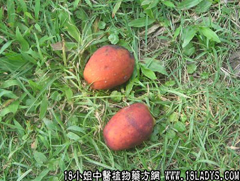

猪仔笼(中药材植物名:饭钵栎)(植物科目:壳斗科)

别名：猪仔粒。
植物名：饭钵栎。
生长环境：本品为大乔木。生于山地树林中，稍潮湿肥沃土壤可见。
分布：广东省中部和南部的山地，海南和越南北部亦有。
入药部分：果实去壳，打碎入药。
采集期：冬季。
采购地点：市药材市场购进。
性味：性凉、味微苦甘。
功能：收敛肺气、止咳、止血。
主治、用量和用法：1、热咳；2、痰火瘰疬；3、小肠气，以上均用1～2两去壳，打碎，清水煎服或加猪瘦肉同煎。
验方：（治肺燥咳方）猪仔笼5钱（去壳打碎）、糖冬瓜5钱、清水两碗半，煎成大半碗，温服。
（方解）肺金受燥而咳，法当润燥。猪仔笼甘凉清燥，糖冬瓜甘润。合为润燥之剂，治燥咳有效。
（方歌）干咳常因肺燥金，清金沙药猪仔笼，加入糖冬瓜煎饮，甘凉清润显其功。
参考资料：1、本品正名猪仔笼，别名猪仔粒/2、牛大力别名猪仔笠，“笠”于猪仔粒之“粒”字同音，不可混淆。